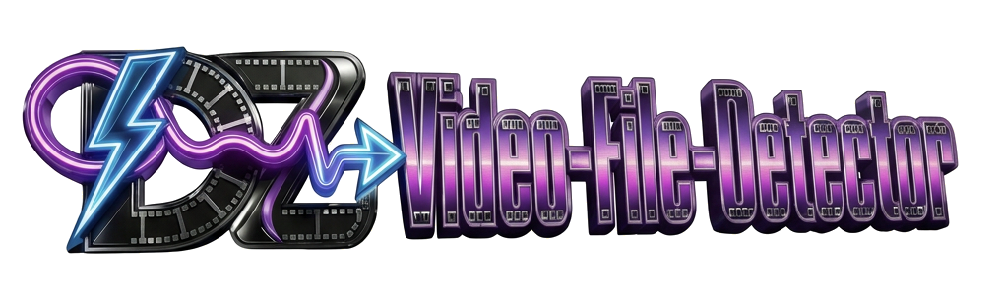
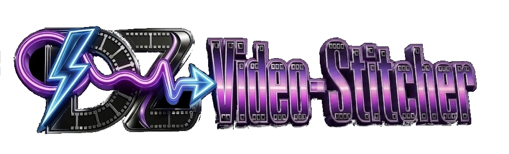

Why H.264 MP4?
Open full page ↗
🎬
DZ Drop Zone
Drop any video, photo or audio track — MP4, MOV, MKV, AVI, WebM, JPEG, PNG, HEIC, MP3, WAV, M4A and more. Each file is inspected automatically; you decide what gets converted before it hits the timeline.

Dropped files — review, then convert

Converted files — download, or add to the stitcher

LOW RES
Quick Preview — 480p draft only
Clips: 0
Duration: 0:00
✨ Happy with the cuts? Choose a resolution below and hit Download.